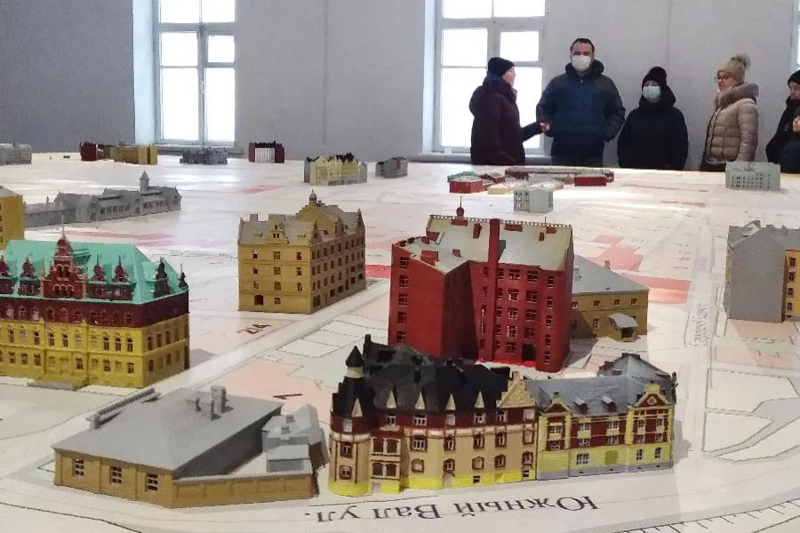

В Военном музее Карельского перешейка находится единственная в стране диорама, посвященная «зимней» войне 1939 — 1940 годов, а также экспозиции «Оружие Великой Отечественной войны» и «Подвиг женщин на войне». А в начале нынешнего года к ним добавился еще и гранд-макет «Выборг 1913», работа над которым началась весной прошлого года.
По словам создателя музея Баира Иринчеева, новую идею он разрабатывал долго: вместе с коллегами обсуждали масштаб, выбирали год, какую часть города показывать. В итоге приняли за точку отсчета 1913-й — последний мирный год Российской империи. Затем жизнь изменилась, а спустя несколько лет Выборг стал одним из крупнейших городов независимой Финляндии. С тех пор по нему несколько раз прокатились войны, город переходил из рук в руки в 1940-м, 1941-м и 1944-м. И всякий раз это было сопряжено с разрушениями.
Проект, осуществляемый командой Иринчеева, своего рода «наш ответ» Музею Южной Карелии в Лаппенранте, где находится макет, представляющий Выборг в том виде, как он выглядел за несколько месяцев до начала «зимней» войны. Архитектор Юха Ланкинен, сын выборгского градостроителя Ялмари Ланкинена, создал его в 1982 — 1985 годах на основе аэрофотоснимков начала сентября 1939 года.
Основой макета, создаваемого командой Иринчеева, стали оцифрованные чертежи Выборгского магистрата — они выложены на сайте Национального архива Финляндии. «Но в Лаппенранте масштаб 1:500, а у нас 1:220, — поясняет Иринчеев. — На нашем макете здания в два раза больше».
Нынешний Выборг отличается от того, каким он был и в 1913-м, и в 1939-м. И не только по причине военных катаклизмов. Во второй половине ХХ века вместо деревянных пригородов появились кварталы новостроек. Перестал ходить трамвай — главное транспортное средство города до 1957 года.
На макете 1913 года нет некоторых зданий «досоветского» Выборга, без которых облик города представить себе сегодня практически невозможно. К примеру, библиотеки Алвара Аалто и художественного музея — нынешнего центра искусств «Эрмитаж-Выборг». Они были построены в те два десятилетия, когда Выборг находился в составе Финляндии. Многие кварталы города в немалой степени именно тогда получили нынешний облик.
На своих местах уже стоят макеты более чем сорока зданий, а всего их будет около двухсот. Появятся рельеф, фонари, вечерняя подсветка. По рельсам побегут трамваи — именно по тем маршрутам, по которым они ходили в 1913 году. Все макеты выполнены на 3D-принтере. Как пояснили в музее, работа оказалась очень сложной и трудоемкой. На печать одного здания может быть потрачено не меньше суток, и если в ходе этого процесса внезапно отключится электричество или закончится пластмасса, приходится все начинать заново.
Работа практически ювелирная. Цвета фасадов полностью соответствуют тому, как это было на самом деле. Трудно оказалось подобрать цвет для вокзала, чтобы передать гранитную облицовку и медную крышу. Макеты некоторых зданий пока еще белые: еще не удалось найти сведений, какого цвета они были. Нет ни фотографий, ни открыток…
Дополнением к экспозиции служат макеты неосуществленных проектов: помечтать всегда не менее интересно, чем увидеть то, что было. Опять-таки помогли чертежи. Увы, лишь на бумаге остался проект ратуши с высокой часовой башней, созданный архитектором Нюстрёмом. А вот возведение православной гарнизонной церкви на скале мыса Терваниеми (Смоляной мыс) напротив замка начали в последние годы Российской империи. Автором был петербургский архитектор Василий Косяков. Но достроить не успели, а впоследствии архитектор Уно Ульберг использовал стены и фундаменты для сооружения Окружного архива. Ныне там ЛОГАВ — Ленинградский областной государственный архив в Выборге.